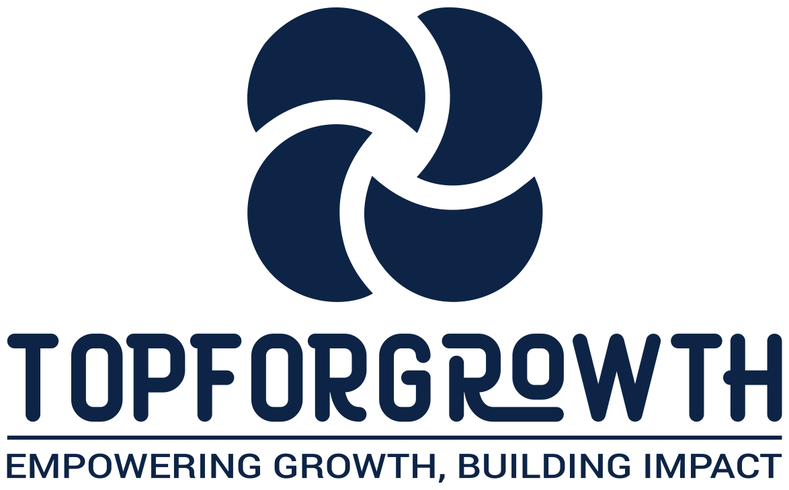

-
Che cos'è il lean
Un modo di organizzare il lavoro nato nelle fabbriche Toyota e oggi usato in ogni funzione aziendale, Finance compresa.
-

-
TOPFramework
Un metodo manageriale in nove step che collega tecnologia, organizzazione e persone per guidare l'adozione dell'AI.
-
TOPFramework in pratica
Gli output di ciascuno dei nove step: come si costruiscono, chi partecipa, quanto tempo richiedono, un esempio compilato e i criteri di qualità.
-
TOPFramework: il caso Gara-Commessa
Un costruttore europeo di tecnologie per la rete elettrica applica il metodo al ciclo gara-commessa dei grandi progetti, step per step.
-

Concetti
Guide introduttive a metodi e concetti di organizzazione aziendale.